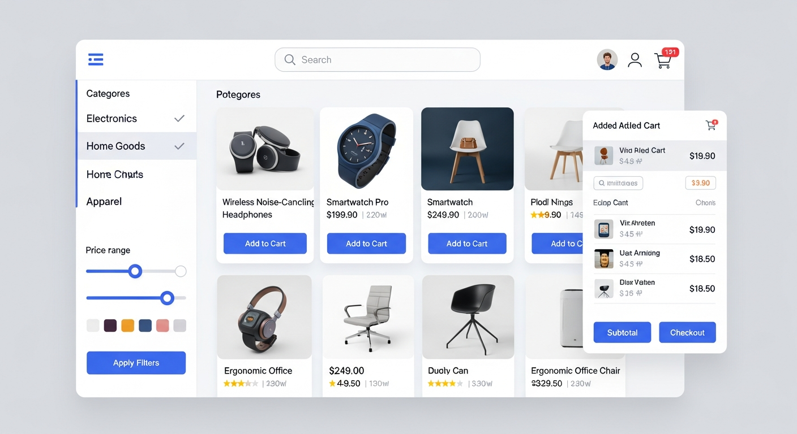
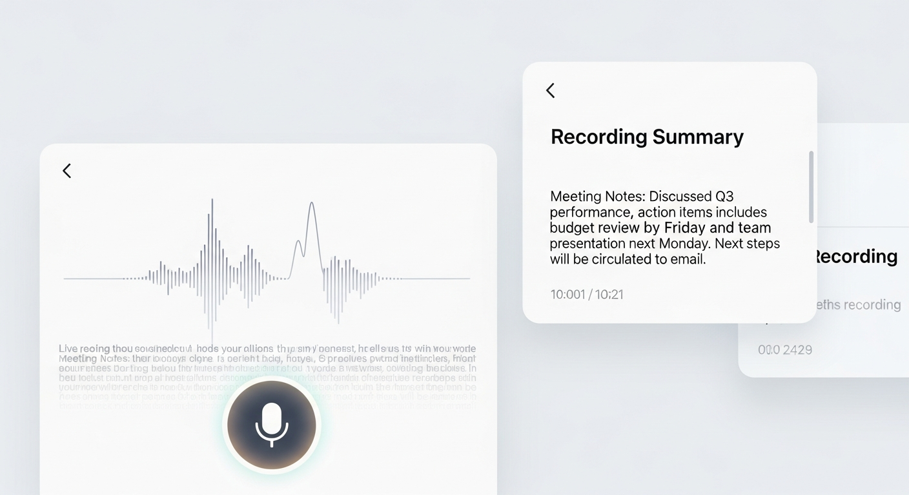
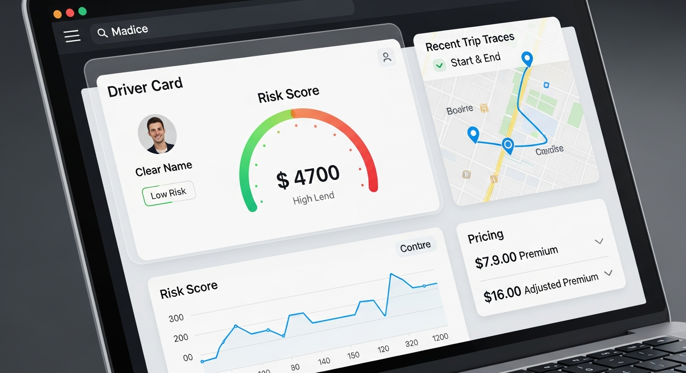

Hi there, I'm Felix👋
Software Engineer
Building elegant solutions with modern technologies. Specialized in Android, Frontend, and Backend development.
About Me
Passionate software engineer with 4+ years of experience in full-stack development. I love creating innovative solutions and bringing ideas to life through code.
Contact Information
Download ResumeProfessional Experience
Software Engineer
Apr 2024 - PresentI ship and maintain slices of production web applications shoppers use daily. The usual mix is React and TypeScript, backend APIs backed by relational data, merges moving through CI/CD, and pairing with design, QA, backend and product so regressions carry numbers behind them.
- •REST and GraphQL integrations emphasize validation parity, sane error payloads, guarded fallbacks and lightweight telemetry whenever partner hops slow down.
- •Production regressions routinely cross React surfaces, middleware and warehouses. Targeted SQL, log traces and dashboards stay paired with repro snippets QA reruns verbatim.
- •Advertising integrations tying Chicory and Gambit journeys into storefront experiences drove a documented one hundred percent lift in attributable in-app ad revenue backed by partner dashboards.
Software Engineer
Jan 2023 - Mar 2024Weekly Ads-era product unfolded inside Scrum teams anchored on JavaScript, React, REST, GraphQL and relational databases. Frontend views, API contracts and validation finished before demos.
- •The slow order-history path floated around three to four seconds until query consolidation, fewer round trips and tighter caching kept common requests reliably under three hundred milliseconds in production.
- •Jest coverage, curated Postman collections, Cypress regression smoke plus CI asserts caught UI drift before merges.
- •Shared SQL validation scripts paired with sharper API signals cut repeat investigation latency about thirty percent once everyone replayed identical fixtures.
Software Engineering Intern
May 2022 - Sep 2022Hands-on internship on Mobile ID flows tying QR scans, NFC taps and Bluetooth readers to Android clients. Debugging meant handset logs plus tight defect write-ups.
- •Exercised NFC, QR and Bluetooth integrations against reader firmware builds.
- •Logged cross-device oddities early with repro assets so firmware and native owners could unblock quickly.
- •Captured edge cases straight from QA feedback without dropping reader state.
Education
Master of Science in Computer Science
2023Technical Skills
Programming Languages
Web Frameworks
Mobile Development
Backend Technologies
Tools & Platforms
Featured Projects
Highlighted below: Evenmint — plus more builds from Android to ML.
Evenmint
Household expense splitting without spreadsheet chaos: line items, weighted or equal splits, credits, payments, and settlement math—with read-only share links when someone just needs the numbers.
Utilities & rent stack ($412.00)
Equal split · 3 people
Groceries ($186.40)
Equal split · 3 people
Internet ($79.99)
Equal split · 3 people
Settlement · who owes what
Travel Bucket List & Info Hub
A full-stack web application for managing your travel bucket list with destination tracking, photo management, and trave...

Crypto Tracker
A Python application that monitors cryptocurrency prices in real-time, sends email alerts when prices cross predefined t...
JukeBot Music Player
Real-time collaborative music sessions using Kotlin, Firebase backend, and GraphQL APIs, enabling synchronized group pla...

E-commerce Platform (ShopEase)
A modern, full-stack e-commerce platform built with Next.js, React, TypeScript, and Express.js. Features comprehensive b...

Voice App - Android Recording with Transcription & Summary
A robust Android voice recording application with real-time transcription and AI-powered summary generation. Features fo...

Telematics-Based Auto Insurance POC
A proof-of-concept system for telematics-based auto insurance that simulates driving behavior, calculates driver risk sc...
Skills & Technologies
A comprehensive overview of the technologies and tools I work with.
Mobile Development
Frontend Development
Backend Development
Get in Touch
Have a project in mind? Let's work together to bring your ideas to life.